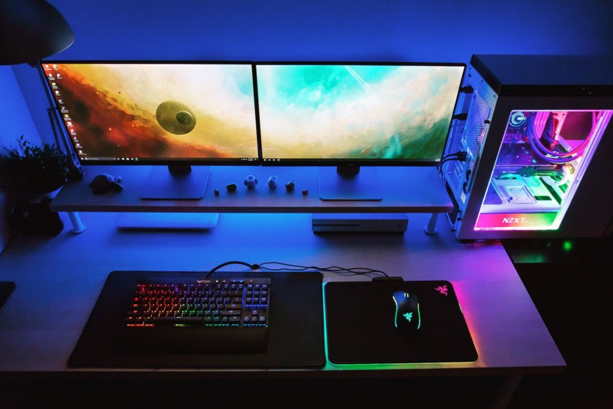
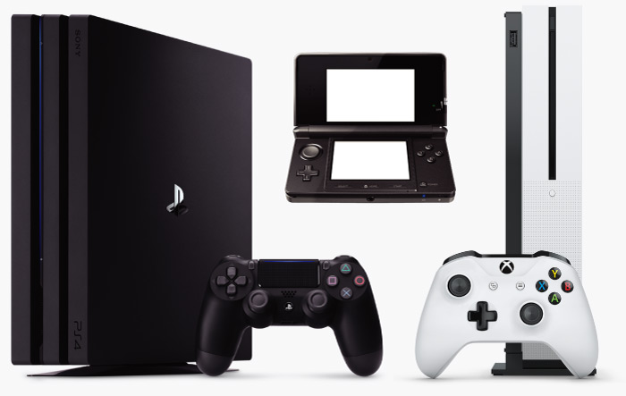
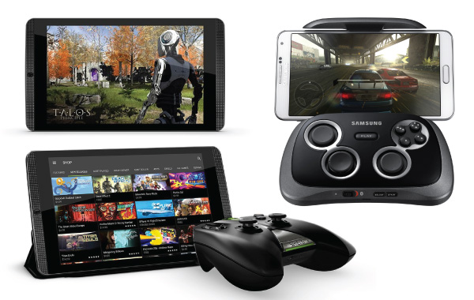

PLATAFORMAS
En informática, una plataforma es un sistema que sirve como base para hacer funcionar determinados módulos de hardware o de software con los que es compatible. Dicho sistema está definido por un estándar alrededor del cual se determina una arquitectura de hardware y una plataforma de software (incluyendo entornos de aplicaciones). Al definir plataformas se establecen los tipos de arquitectura, sistema operativo, lenguaje de programación o interfaz de usuario compatibles.
En el caso de las plataformas de videojuegos, son los distintos tipos de dispositivo en los que se ejecutan los videojuegos. Los cuatro tipos de plataforma más populares son el PC, las videoconsolas, los dispositivos portátiles y las máquinas arcade.
Las videoconsolas o consolas de videojuegos son aparatos electrónicos domésticos destinados exclusivamente a reproducir videojuegos. Creadas por diversas empresas desde los años 70, han generado un inmenso negocio de trascendencia histórica en la industria del entretenimiento. La videoconsola por antonomasia es un aparato de sobremesa que se conecta a un televisor para la visualización de sus imágenes, pero existen también modelos de bolsillo con pantalla incluida, conocidos como videoconsolas portátiles.
Computadoras -PC

Es la plataforma más versátil de todas ya que permite a los usuarios realizar múltiples tareas que van desde la reproducción de audio y video, navegación en internet, hasta trabajos de oficina, y trabajos educativos. Por ser la plataforma de videojuegos más poderosa de todas, las computadoras para videojuegos necesitan una configuración especial y distinta a aquellas que poseen las computadoras de hogar y oficina; Procesador más poderoso, tarjeta gráfica de última generación y gran cantidad de Memoria Ram. Todos estos elementos son los que determinarán si una computadora puede reproducir un juego de última generación o no.
Una de las grandes ventajas de las computadoras es que permiten al usuario jugar con el dispositivo periférico que desee, puede ser un control tradicional, un teclado y mouse, un joystick (palanca) o sensor de movimiento.
Consolas de Videojuegos

En principio las consolas de videojuegos fueron creada únicamente para reproducir videojuegos. Hoy día, y gracias al internet, una consola de videojuegos es un centro de entretenimiento que permite a los usuarios reproducir películas en DVD o Blu-ray, música en línea, video en demanda, servicios de películas y series en internet e incluso navegar por la red y acceder a redes sociales.
El punto más fuerte que poseen las consolas de videojuegos es su vida útil. Una consola de videojuegos recibe soporte durante aproximadamente 8 años, y en todo este tiempo se publican juegos, accesorios periféricos y actualizaciones que mejoran el sistema. A diferencia de una Computadora, una consola de videojuegos no requiere de cambios de piezas cada cierto tiempo para poder reproducir el juego más reciente en el mercado. Al mismo tiempo, esta es una de las desventaja que poseen las consolas frente a las computadoras ya que al finalizar su ciclo en el mercado, se convierten en obsoletas.

Dispositivos Móviles
El auge de los Dispositivos Móviles ha convertido estos equipos de comunicación en la segunda plataforma de videojuegos más popular del mundo; cada día más y más personas buscan un equipo para trabajo, estudio o reproducción de contenido de entretenimiento en internet. Los sistemas más populares dentro de los dispositivos móviles son iOS (Apple), y Android (Google)
Al día de hoy se estima que unos 3 billones de Dispositivos Móviles están activos en todo el mundo, y cada día se crean cientos de juegos específicamente para estas plataformas.
Los juegos para Dispositivos Móviles por lo general son simples y sencillos en cuanto gráficas y elementos en escena, aunque algunos desarrolladores de juegos han publicado títulos con gráficas avanzadas, dirigidos a usuarios de Dispositivos Móviles de alta gama (iPhone, Galaxy, Nexus, G4).